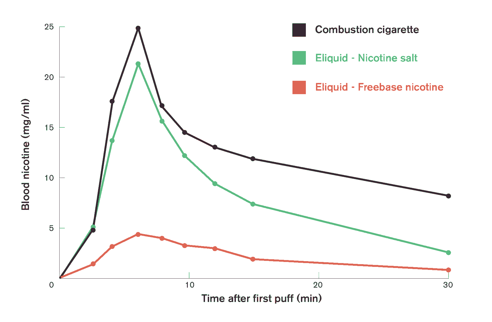
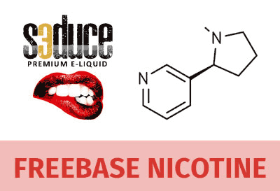
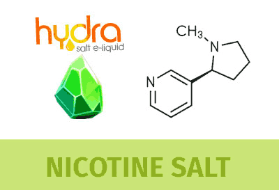
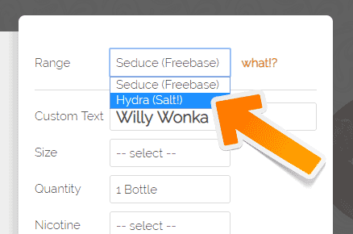

Nicotine is the only thing that makes Hydra different from Seduce. Hydra comes with salt shots, Seduce comes with freebase shots. These are two different types of nicotine.
Hydra, or salt nicotine feels much smoother on inhale. The throat hit is similar to zero nicotine when vaped but the effects of nicotine are obviously following. They actually hit harder, and last longer. An explanation would be "You feel hydra first in the head, not in the chest".  From a vaping perspective, the difference between freebase nicotine and nicotine salt is a matter of how it affects your vaping experience. Nicotine Salts are felt and absorbed more like a traditional cigarette as you may notice from the chart above.
 Seduce (freebase nicotine) involves a nicotine extraction process which makes the resultant nicotine lean a little bit on the alkaline side in the Ph Graph. That's why you feel a harsher throat hit when you vape it. Many even cough, leaving them with a negative vaping experience. So people tend to lower to make it more bearable when vaped, but they sometimes find themselves consuming a lot of eliquid or not having their satisfactions met.
 On the other hand, Hydra (with salt nicotine) has the nicotine left in it's pure form but has it's acidity neutrally balanced, which leaves it more "absorbtion friendly". When vaped, hits your throat much smoother, gets in your body more gradually, overall increasing your satisfaction. This can make you vaping in higher doses, consuming less eliquid, while saving money with smoother hits!
Both our "Seduce" (Freebase) and "Hydra" (Nic Salts) are both pharmaceutical grade, extracted in their highest purity, and are FDA approved with Lab reports. Packaging and quality also conform with TPD.
 All the items in our flavor menu can be produced in Hydra, in addition to our traditional customization! At the top of your request form, you will find a Range selector. Just swap the Range to "Hydra", fill out the other fields and click the Send Request Button! All nicotine products will be supplied in TPD compliant NicShots.